Your NAS front panel, your cards.El panel de tu NAS, tus tarjetas.
Rotating status cards for the front LCD of AOOSTAR mini PCs and NAS boxes. Pick which cards appear, in which order and for how long, from one YAML file, or write your own in a few lines of Python. Frames are drawn with Pillow and sent through asterctl. Tarjetas de estado que rotan en la LCD frontal de los mini PC y NAS AOOSTAR. Eliges qué tarjetas aparecen, en qué orden y cuánto duran desde un solo archivo YAML, o escribes las tuyas con pocas líneas de Python. Los cuadros se dibujan con Pillow y se envían con asterctl.
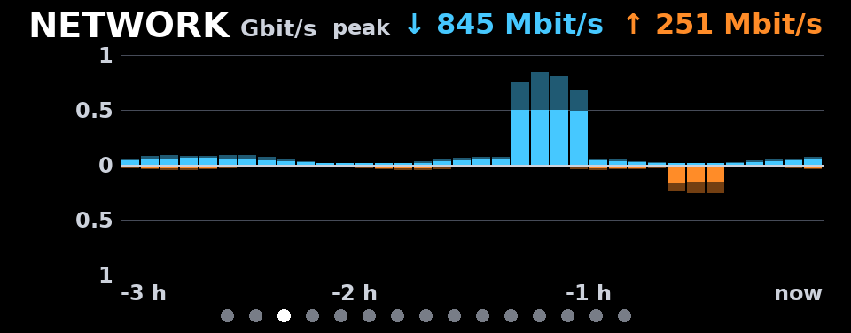
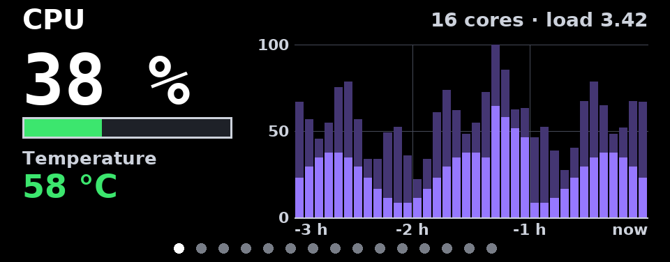
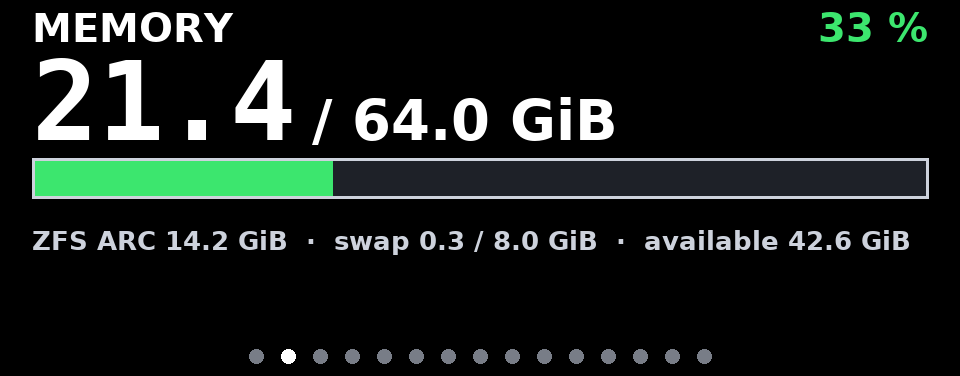
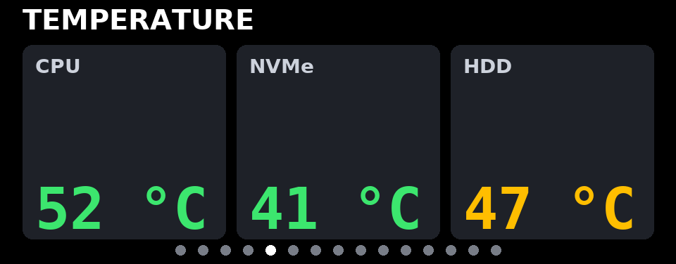
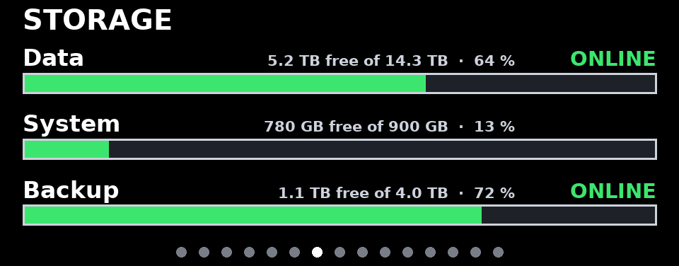
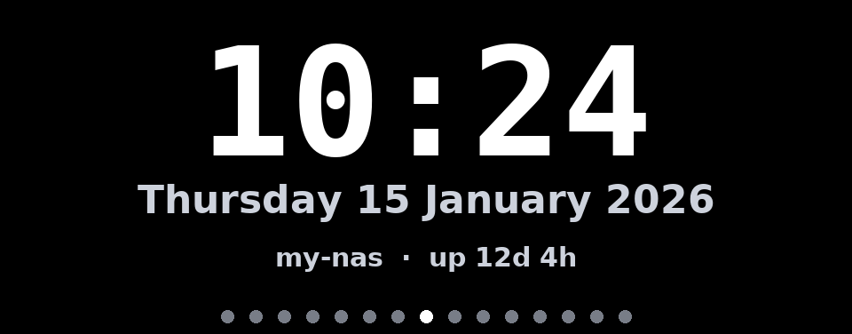
GalleryGalería
Every built-in card, rendered by aoostar-lcd preview with synthetic data at the panel's native 960×376.Todas las tarjetas incluidas, generadas con aoostar-lcd preview y datos sintéticos a la resolución nativa de 960×376.
cpuLoad, temperature and a 3-hour history: bars are 5-minute averages, the lighter caps their peaks.Carga, temperatura e historial de 3 horas: las barras son promedios de 5 minutos y la parte clara, sus picos.
memoryUsed / total RAM in GiB or GB, with ZFS ARC and swap when present.RAM usada / total en GiB o GB, con ARC de ZFS y swap si existen.
networkInbound up, outbound down, 3 hours, every NIC summed. Mbit/s or MB/s; scale in 1-2-5 steps.Entrante arriba, saliente abajo, 3 horas, todas las NIC sumadas. Mbit/s o MB/s; escala en pasos 1-2-5.
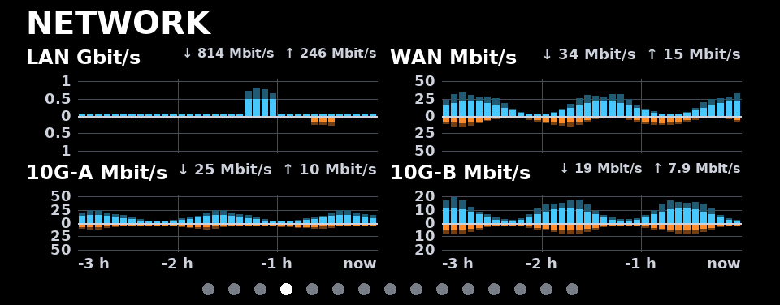
networkmode: splitOne small chart per interface (up to four), each with its own scale and label.Un gráfico por interfaz (hasta cuatro), cada uno con su escala y su etiqueta.
temperatureUp to six readings from hwmon chips, SMART (without waking sleeping disks) or files, colored by thresholds.Hasta seis lecturas de sensores hwmon, SMART (sin despertar discos dormidos) o archivos, con colores según umbrales.
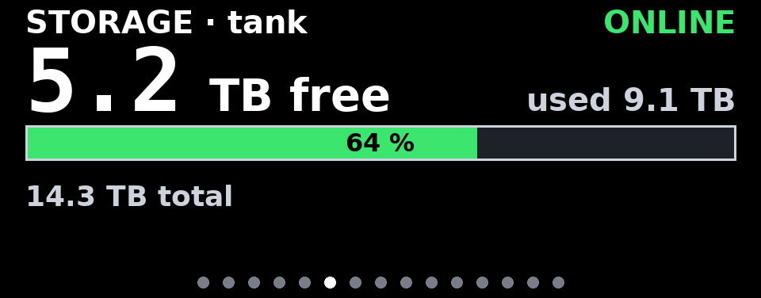
storage1 volumeA ZFS pool or a mount point: free space, used, percentage and pool health.Un pool ZFS o un punto de montaje: espacio libre, usado, porcentaje y salud del pool.
storage2-4 volumesSeveral volumes as rows. A pool that is not ONLINE raises a red banner on every card.Varios volúmenes en filas. Un pool que no está ONLINE muestra una franja roja en todas las tarjetas.
clockTime and date (any strftime format, any time zone), host name and uptime.Hora y fecha (cualquier formato strftime y zona horaria), nombre del equipo y tiempo encendido.
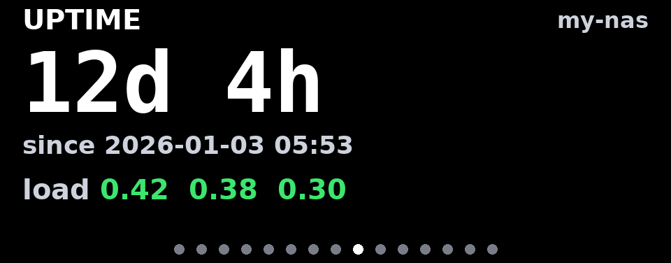
uptimeTime since boot and load averages, colored per CPU core.Tiempo desde el arranque y carga promedio, con color según los núcleos.
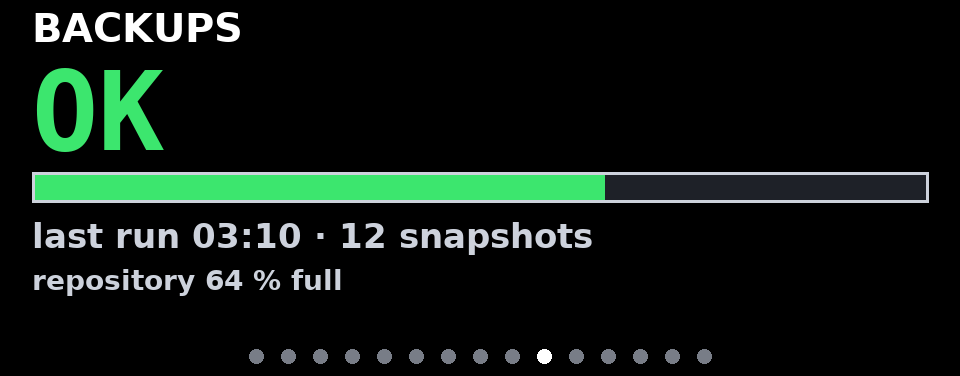
customWhatever a command prints (JSON or text): value, unit, status color, bar and lines.Lo que imprima un comando (JSON o texto): valor, unidad, color de estado, barra y líneas.
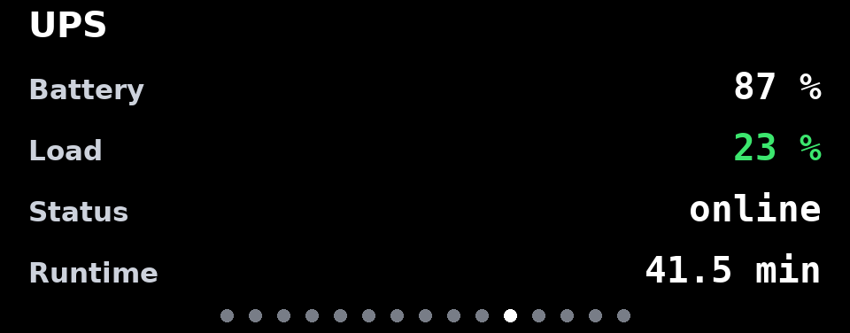
customfieldsPick values from any JSON file by dotted path, with units and thresholds.Toma valores de cualquier JSON por ruta con puntos, con unidades y umbrales.
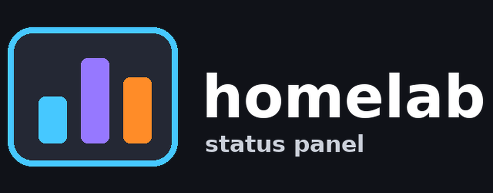
imagecontainYour logo; transparency is composed over the background color you choose.Tu logo; la transparencia se combina con el color de fondo que elijas.
imagecoverA folder of pictures, re-read on every pass so you can drop files in at any time.Una carpeta de imágenes que se relee en cada vuelta, para agregar archivos en cualquier momento.
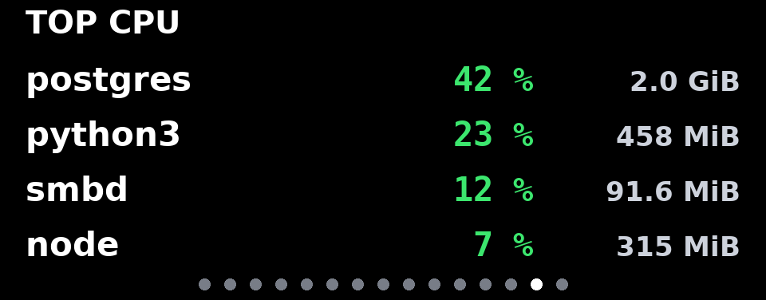
pluginexamples/A Python card from examples/plugins/top_processes.py: top processes by CPU.Una tarjeta en Python de examples/plugins/top_processes.py: procesos que más CPU usan.
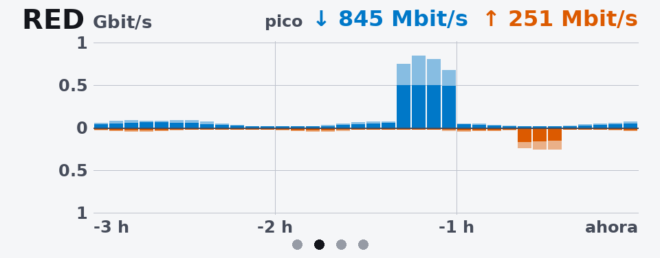
theme: lightlanguage: esLight preset and Spanish labels; every color can be overridden.Tema claro y textos en español; cualquier color se puede cambiar.
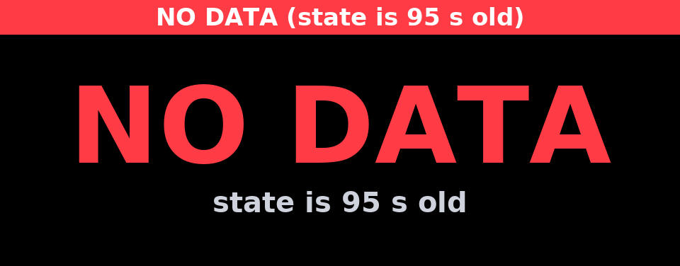
NO DATAShown when metrics stop arriving, so the panel never displays stale numbers.Aparece cuando dejan de llegar métricas, para que la pantalla nunca muestre datos viejos.
How it worksCómo funciona
A collector measures, a renderer draws, asterctl talks to the panel. Run them together, or split them between a host and a container.Un colector mide, un renderizador dibuja y asterctl habla con la pantalla. Corren juntos o separados entre un host y un contenedor.
Split for ProxmoxSeparado para Proxmox
The host sees every NIC, pool and disk; an unprivileged LXC only needs the serial device and a read-only bind mount.El host ve todas las NIC, pools y discos; un LXC sin privilegios solo necesita el dispositivo serie y un montaje de solo lectura.
Never staleNunca datos viejos
The state has a timestamp; if it gets too old the panel says NO DATA. History survives restarts.El estado lleva marca de tiempo; si envejece la pantalla dice SIN DATOS. El historial sobrevive a los reinicios.
Gentle on the panelCuida la pantalla
A frame is sent only when it changed; failures are retried on the next interval, never in a tight loop.Solo se envía un cuadro si cambió; un fallo se reintenta en el siguiente intervalo, nunca en un bucle apretado.
ConfigureConfigurar
One YAML file. Order is rotation order; each card has a duration and its own options. Mistakes are reported with the exact key and a suggestion.Un archivo YAML. El orden es el de la rotación; cada tarjeta tiene su duración y sus opciones. Los errores indican la clave exacta y una sugerencia.
config.yaml
language: en # en | es display: device: /dev/ttyACM0 rotation: default_duration: 8 theme: preset: dark # dark | light, any color cards: - type: cpu temperature_chip: k10temp - type: network interfaces: [enp1s0, enp2s0] units: bits # Mbit/s | bytes = MB/s mode: aggregate # or split - type: storage units: si # TB | iec = TiB volumes: - {zfs: tank, label: Data} - {mount: /, label: System} - type: clock duration: 5 - type: image path: /etc/aoostar-lcd/images enabled: false
validationvalidación
$ aoostar-lcd check -c config.yaml aoostar-lcd: configuration error: cards[1] (network): unknown option 'interface'. Did you mean "interfaces"? Allowed: bucket_seconds, exclude, history_minutes, interfaces, labels, ... $ aoostar-lcd check -c config.yaml config: config.yaml (OK) [on ] cpu cpu 8 s refresh 0 s [on ] network network 8 s refresh 0 s [on ] storage storage 8 s refresh 30 s [on ] clock clock 5 s refresh 60 s [off] image image 8 s refresh 0 s asterctl: /usr/local/bin/asterctl version 0.2.0
preview, no hardwarevista previa, sin hardware
$ aoostar-lcd preview -c config.yaml --out /tmp/cards $ aoostar-lcd preview -c config.yaml --out /tmp/cards --live
Your own cards and picturesTarjetas e imágenes propias
From no code to full control: a command, a picture, or a small Python class loaded from the YAML.De cero código a control total: un comando, una imagen o una pequeña clase de Python que se carga desde el YAML.
hello_card.py
from aoostar_lcd import Card class HelloCard(Card): type_name = "hello" defaults = {"greeting": "Hello"} def collect(self): # on the host import os return {"processes": len(os.listdir("/proc"))} def render(self, canvas, theme, data): # next to the LCD canvas.title("HELLO") canvas.text((canvas.left, canvas.top + 170), self.options["greeting"] + "!", size=90, anchor="ls")
config.yaml
- type: plugin plugin: plugins/hello_card.py:HelloCard greeting: Hi - type: custom # no Python at all title: BACKUPS command: [/usr/local/bin/backup-status, --json] refresh: 60 - type: image # png, jpg, webp, gif path: /etc/aoostar-lcd/images mode: contain # cover | fit-width background: "#101218"
InstallInstalar
Three ways to run it. asterctl is installed at the pinned version in all of them.Tres formas de correrlo. En todas se instala asterctl en la versión fijada.
# asterctl: pinned release, SHA-256 checked (or --from source = cargo build) sudo scripts/install-asterctl.sh # the package, in its own virtual environment sudo python3 -m venv /opt/aoostar-lcd sudo /opt/aoostar-lcd/bin/pip install . sudo ln -sf /opt/aoostar-lcd/bin/aoostar-lcd /usr/local/bin/aoostar-lcd # configuration and service sudo install -d /etc/aoostar-lcd && sudo cp config.example.yaml /etc/aoostar-lcd/config.yaml sudo aoostar-lcd check -c /etc/aoostar-lcd/config.yaml sudo cp systemd/aoostar-lcd.service /etc/systemd/system/ sudo systemctl daemon-reload && sudo systemctl enable --now aoostar-lcd
# on the Proxmox host: the collector writes /run/aoostar-lcd/state.json sudo cp systemd/aoostar-lcd-collector.service /etc/systemd/system/ sudo systemctl enable --now aoostar-lcd-collector # /etc/pve/lxc/<id>.conf (Proxmox VE 8.1+) dev0: /dev/ttyACM0,gid=20,mode=0660 mp0: /run/aoostar-lcd,mp=/data,ro=1 # inside the container: asterctl + package, then cp systemd/aoostar-lcd-display.service /etc/systemd/system/ systemctl enable --now aoostar-lcd-display # reads /data/state.json, no root
cp config.example.yaml config.yaml # keep display.device: /dev/ttyACM0 docker compose up -d --build # builds asterctl from the pinned commit # or prebuilt asterctl (x86_64) docker build --build-arg ASTERCTL_SOURCE=release -t aoostar-lcd . docker run -d --device /dev/ttyACM0 --group-add dialout --network host \ -v ./config.yaml:/config/config.yaml:ro aoostar-lcd
asterctl and licensesy licencias
asterctl, by Markus Zehnder, speaks the panel's reverse-engineered protocol. It is a pinned external dependency: never copied into this repository.asterctl, de Markus Zehnder, habla el protocolo de la pantalla, obtenido por ingeniería inversa. Es una dependencia externa fijada: nunca se copia en este repositorio.
| ComponentComponente | LicenseLicencia | How it is usedCómo se usa |
|---|---|---|
| aoostar-lcd-cards | MIT | This project.Este proyecto. |
| asterctl v0.2.0 | MIT OR Apache-2.0 | Pinned in asterctl.version (commit 078dc267, release SHA-256 d29c1d9b…). Installed by scripts/install-asterctl.sh or the Dockerfile; license texts travel with the binary. CI checks the tag weekly.Fijado en asterctl.version (commit 078dc267, SHA-256 del release d29c1d9b…). Lo instala scripts/install-asterctl.sh o el Dockerfile; los textos de licencia van junto al binario. CI revisa el tag cada semana. |
| DejaVu Sans / Sans Mono Bold | Bitstream Vera + Arev | Bundled fonts, unmodified, license in the package.Fuentes incluidas, sin modificar, con su licencia en el paquete. |
| Pillow · PyYAML · psutil | MIT-CMU · MIT · BSD-3 | Installed by pip.Las instala pip. |
asterctl --simulate); sending to a real panel must be confirmed on the device.El fabricante no documenta el protocolo de la pantalla; el autor de asterctl advierte que un comando incorrecto puede colgarla hasta apagarla y encenderla. Este proyecto se probó sin hardware (vistas previas, asterctl --simulate); el envío a una pantalla real hay que confirmarlo en el equipo.